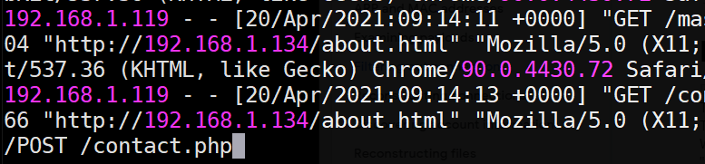

Join the following room on TryHackMe: https://tryhackme.com/room/linuxserverforensics .
The room covers examining web server logs to discover traces of brute-force attacks, of malicious uploads, and of sensitive data exposure. It also examines a variety of ways adversaries can backdoor a system via creating cron jobs, cracking password hashes, inserting ssh keys, and discovering account credentials on the system in log, configuration, and history files. Complete the exercise.
- Take a screenshot showing completion of the room
Task #2: Note that curl is not considered a browser of its own in this exercise when counting tools in Task #2. One helpful command is below:
egrep -v "Mozilla|DirBuster" access.log
Task #3: Binary data in access.log makes it difficult to find the POST to contact.php. To do so, bring the file up with 'less', then search using the '/' character for "POST /contact.php" as shown below.

Another useful command for filtering out log entries so that only successful (200) GET requests are show is below:
egrep "DirB" /var/log/apache2/access.log | egrep "GET" | egrep " 200 "
Operating systems log each login in order to allow the administrator to track the activity on a system in case of any issues. On Linux, two utilities are often used to view prior logins: lastlog and last.
One can view last logins on a per-account basis using lastlog. When run without parameters, it outputs all accounts on the system. However, one can also specify a specific username to examine with the -u flag.
On your Kali VM, run the following commands to demonstrate the command:
lastlog lastlog -u root
To get a raw list of the most recent logins, one can use the last command. Run the command below to view the last 10 login attempts on the machine.
last -10
The commands reveal the IP address of the machine you have used to log into the VM. We can look up the geographic location of this IP address using any number of free APIs. One such API is IP-API. When given an IP address, it returns its country, city, region, latitude, and longitude in a JSON object. One can also send in specific parameters using the URL parameter fields to return specific information. Fill in your IP address in the commands below to demonstrate this.
curl http://ip-api.com/json/<FMI> curl http://ip-api.com/json/<FMI>?fields=city
- Take a screenshot showing the city returned by IP API.
As a system administrator, it might be useful to take a list of the most recent logins, pull out the IP addresses, and then perform a geographic lookup on each to detect anomalies. We will do so by incrementally using the tools we have covered so far in this codelab.
First, we'll use last to get the last logins and send its output to egrep to pull out all entries containing IP addresses in them using a regular expression that looks for 4 sets of integers separated by a period. From this output, we can then print the third field which contains the IP address using awk. Finally, we will sort the output and call uniq to remove duplicates to eliminate redundant lookups. Perform the commands below and view their output.
last | egrep " [0-9]+\.[0-9]+\.[0-9]+\.[0-9]+ "
last | egrep " [0-9]+\.[0-9]+\.[0-9]+\.[0-9]+ " | awk '{print $3}'
last | egrep " [0-9]+\.[0-9]+\.[0-9]+\.[0-9]+ " | awk '{print $3}' | sort | uniqGiven this list of IP addresses, we can send it as input to a loop that iteratively calls IP API to return the cities associated with each. For clarity, we'll assign the list of IP addresses to an environment variable using the backtick notation (` `), then echo the variable within the for loop in the shell.
IPS=`last | egrep " [0-9]+\.[0-9]+\.[0-9]+\.[0-9]+ " | awk '{print $3}' | sort | uniq`
for i in `echo $IPS`
do
curl http://ip-api.com/json/$i?fields=city
echo $i
done- Take a screenshot showing the cities returned. Are all of the logins from Portland?
Unfortunately, one can never trust log files directly since an adversary can modify them after obtaining access. Logs must be made tamper-resistant such as sending them off-machine as done in this infamous hacking case.
Begin by examining the man page for the lastlog command. Scroll to the bottom of the man page.
- What file does it use to store its database times of previous user logins?
- Using
ls -l, what is its current size?
As it turns out, the database stores one entry per user in /etc/passwd. However, if the user has never logged in before, as is the case with most system accounts, the entry will be null. The database is stored in binary format. There are several tools that we can use to examine it easily however. Run hexdump on the file and see that it contains mostly nulls with entries only associated with accounts you have used to login previously with.
hexdump <FMI>
While selectively erasing your last login can be done using binary editing tools such as xxd, a much easier way to remove all traces is to simply zero out the file. Perform a lastlog command on the root account, save off the log file, then create an empty log file. Perform the lastlog command again to show that the root account's last login has been eliminated.
lastlog -u root cd /var/log mv <FMI> <FMI>.orig touch <FMI> lastlog -u root
The last command can also be easily tampered with. It uses a different database to store its data. Begin by examining the man page for the last command.
- What two files are used to store login information? How do they differ?
We will be modifying the file used for the last command. While we could wipe out all of its entries as done with lastlog, it would be pretty clear to an administrator that the system was compromised. A sneakier thing to do would be to eliminate the last several login events from the file. Begin by using xxd to dump the hex representation of the file. Each login and logout event is associated with a pseudo-terminal that was used for the session (e.g. pts/) as well as an IP address. When examining the file, see how often IP addresses show up.
xxd <FMI> | less
The size of each entry in the file is made even more evident by filtering on the pseudo-terminal string and its subsequent 5 lines.
xxd <FMI> | egrep -A 5 pts | less
Calculate the size of each entry by performing the hexadecimal arithmetic on adjacent offsets and then converting it into decimal. For example, if the adjacent entries were as below, then the calculation would be (0x140 - 0x040 = 0x100 = 256 = entry_size):
00000040: 0000 0000 0000 0000 0000 0000 3733 2e32 ............73.2 00000050: 3430 2e32 3331 2e37 3700 0000 0000 0000 40.231.77....... ... 00000140: 0000 0000 0000 0000 0000 0000 3130 2e32 ............10.2 00000150: 3030 2e38 392e 3134 3300 0000 0000 0000 00.89.143.......
Next, calculate the number of bytes required to represent 10 entries and 20 entries. We will now tamper with the file by successively eliminating them. First, change into the directory and make a copy of the original file and view the last 3 logins.
cd /var/log cp -p wtmp wtmp.orig last -3
The head command can be passed a --bytes flag and a negative <SIZE> offset that will result in the last <SIZE> bytes being truncated. Fill in the <SIZE> to truncate the last 5 entries and redirect the output to the log file. View the last 3 logins after the file has been replaced.
head --bytes=-<SIZE> wtmp.orig > wtmp last -3
- Take a screenshot of the result
Then, calculate the <SIZE> of 10 login entries and repeat the steps. View the last 3 logins after the file has been replaced.
head --bytes=-<SIZE> wtmp.orig > wtmp last -3
- Take a screenshot of the result
By default, Linux keeps a finite amount of log data in /var/log. From a security perspective, it is important to understand the time frames log data is collected and stored. On Linux systems, the logrotate command manages the automated rotation of log data on a machine. An administrator can configure a policy on a per log basis to control its rotation.
On the Kali VM, begin by listing the log files for failed logins and for authentication attempts.
ls -l /var/log/btmp* /var/log/auth.log*
As the listing shows, the logs have different policies that control their rotation. One of the two uses settings that map to the default rotation policy for logrotate while the other has a custom policy. The policies differ in terms of the frequency logs are rotated, the number of old versions to keep, and whether or not to use compression. Perform a man on logrotate to find the file that configures the options used for log rotation. Then, examine the file and answer the following questions:
- What is the frequency of rotation and the number of backlogs kept by default?
- How old does a logged event have to be before it is forgotten by default?
The configuration file also includes a directory where custom log rotation policies are stored that override the default. The files are typically named after the log file they control. Find the configuration for the log that has a custom policy defined.
- What is the frequency of rotation and the number of backlogs kept in this policy?
- How old does a logged event have to be before it is forgotten in this policy?
Join the following room on TryHackMe: https://tryhackme.com/room/introtosiem .
The room covers the visibility and analysis of events throughout an enterprise and how modern tools are used to detect and react to suspicious events across an entire network. Complete the exercise.
- Take a screenshot showing completion of the room